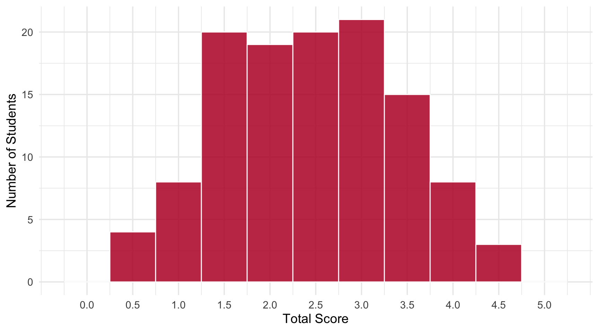
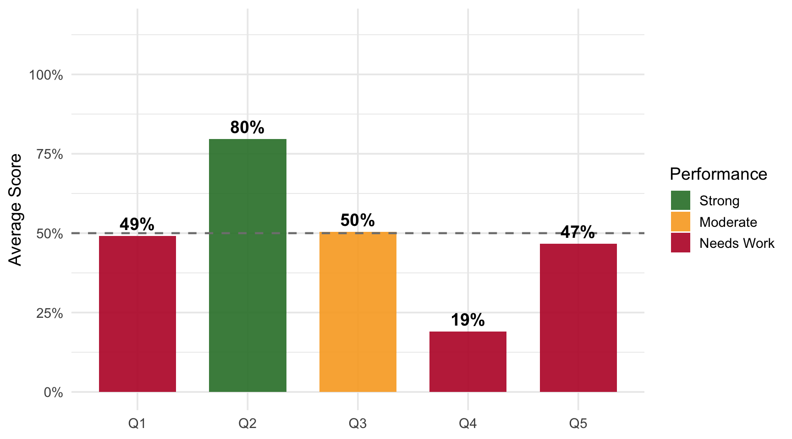

Daily 1 - Jan 12
Class Performance
Students: 118 | Mean: 2.45 | Median: 2.5 | SD: 0.96
Scores ranged from 0.5 to 4.5 out of 5 points.
Score Distribution
Performance by Question

Questions
Q1: What does a histogram tell you?
Correct Answer
A histogram shows the frequency distribution of continuous data — how many observations fall within each range/bin.
Common Errors
- Confusing with time series (“data over time”)
- Confusing with bar charts (“comparing categories”)
- Confusing with box plots (mentioning quartiles)
Q2: What does standard deviation measure?
Correct Answer
SD measures how spread out the data is from the mean — the average distance of data points from the center.
Common Errors
- Confusing mean with median (“distance from the median”)
- Confusing with residuals (“how far from predicted value”)
- Confusing with IQR/range
Q3: What is a regression?
Correct Answer
A regression is a statistical model that describes the relationship between variables — how independent variable(s) predict a dependent variable.
Common Errors
- Using everyday meaning (“decline” or “going backwards”)
- Confusing with hypothesis testing
- Confusing with correlation
Q4: How do you estimate a regression?
Correct Answer
Using Ordinary Least Squares (OLS) — finding coefficients that minimize the sum of squared residuals.
Common Errors
- Naming tools instead of methods (“Excel,” “JMP”)
- Circular answers (“regression analysis”)
- High blank rate — most skipped question
Q5: How do you test significance of a coefficient?
Correct Answer
Compare the p-value to alpha (typically 0.05). If p-value < alpha, the coefficient is statistically significant.
Common Errors
- Comparing coefficient to a number (“if coefficient > 1”)
- Using R² instead of p-value
- Just naming the test without explanation
Key Takeaways
Strengths: SD measures spread from mean | p-value vs alpha | Regression models relationships
Review:
- Histograms show frequency distribution — not time series or bar charts
- OLS minimizes squared residuals — naming software doesn’t explain it
- p < alpha → significant — compare p-value to 0.05